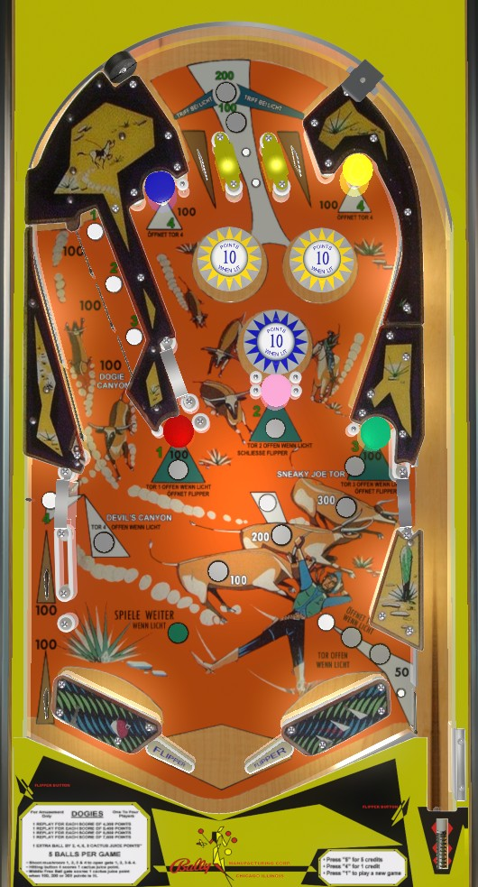

At the start of each ball, and after any shot to the Dogie Canyon on the left, be sure to hit the blue or yellow mushroom bumpers at the top of the game to open the Devil's Canyon gate above the left out lane. If the Devil's Canyon gate is open, feel free to shoot the Dogie Canyon; otherwise, shoot up to the top mushroom bumpers and pop bumpers, or try to get the ball into the Sneaky Joe gate on the middle-right for a replunge.
The below picture of Dogies' playfield was taken from the VPX recreation by Kees. The playfield text is written in the German language, as seems to be the case for a significant number of copies of Dogies.

The left and right top lanes score 10 points. The center top lane scores 100 points, or 200 when lit. To light the center top lane, have the ball bounce off of either of the wall switches that form the funnel toward the top lanes. If the center top lane is lit, it unlights when a pop bumper is triggered.
All 5 mushroom bumpers score 100 points when hit. The center white mushroom bumper, labelled 2, zips the flippers closed when hit. The orange (center-left, labelled 1), green (center-right, labelled 3), and yellow (upper-right, labelled 4) bumpers all reopen the flippers when hit if they are closed.
Hitting the number 1, 2, or 3 mushroom bumpers qualifies both the Dogie Canyon and the Sneaky Joe right gate for 100, 200, or 300 points respectively. Only one number and value can be selected at a time, and selecting a different 1/2/3 number will override the previous selection. Selections are cancelled when the ball drains or the Sneaky Joe right gate is used.
Hitting the blue or yellow mushroom bumpers labelled 4 at the top of the game opens the Devil's Canyon gate positioned on the left, directly above the left out lane.
If the ball is shot into the Dogie Canyon with no number selected, it will loop around over the three rollover buttons and bounce to the right towards the pop bumpers. If a number has been selected, then as the ball comes down the Dogie Canyon, it will be redirected leftwards into the Devil's Canyon. If gate #4 has not been opened, this Dogie Canyon exit will fall into a drop lane that causes the ball to drain in the left out lane. If gate #4 is open, the ball will be redirected back into play from the above the left out lane, and gate #4 will close.
Key takeaway: if mushroom bumpers 1, 2, or 3 are lit, don't shoot the Dogie Canyon unless the Devil's Canyon white gate light above the left slingshot is also lit.
The ball can reenter the shooter lane at any time via the Sneaky Joe gate on the right. If no 1-2-3 number is selected, this scores no points. If a 1-2-3 number is selected, the Sneaky Joe gate scores 100 points times the selected number as well as one Cactus Juice score, then cancels the selected number. One Cactus Juice score is also earned for any full shot into Dogie Canyon. Each player's Cactus Juice score is indicated on a separate set of yellow score reels in the lower left of the backbox, and free games or extra balls can be awarded for reaching certain Cactus Juice thresholds.
Pop bumpers score 1 point, or 10 points when lit. The lower bumper is always lit. The rollover button just above the 200-point Sneaky Joe insert causes the two upper pop bumpers to light. This center rollover button also qualifies the free ball gate in the right out lane, which can be opened by pressing a second rollover button located just above the right slingshot. If the gate is open and the flippers are zipped together, the gate will close until the flippers reopen. The gate also closes if it is used or the ball drains.
The left out lane scores 100 points. The drop lane above the left out lane also scores 100; the ball rolls through here if a shot was made to Dogie Canyon with a 1-2-3 number selected, but without opening the Devil's Canyon #4 gate. The right out lane scores 50 points. Slingshots score 1 point. There are no in lanes. The slingshots are shallow, taking a similar angle as lowered unzipped flippers. Flippers are zipped together by hitting the white mushroom bumper, and reopened by hitting the orange, green, or yellow mushroom bumpers.
There is no end of ball bonus. Tilt ends the ball in play only. On a factory machine, the Shoot Again light is only used to indicate that a player has not lost their turn if the ball reenters the shooter lane via the Sneaky Joe middle-right gate or the right out lane free ball gate, but conversion kits that change the game to support extra balls do exist.